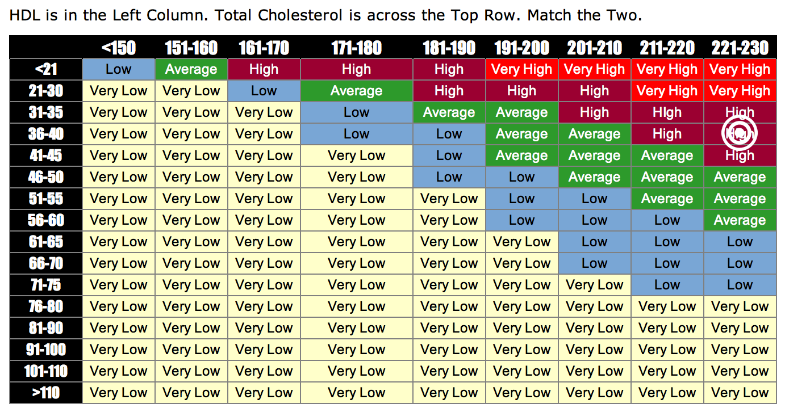
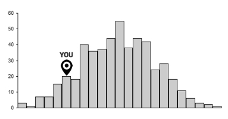
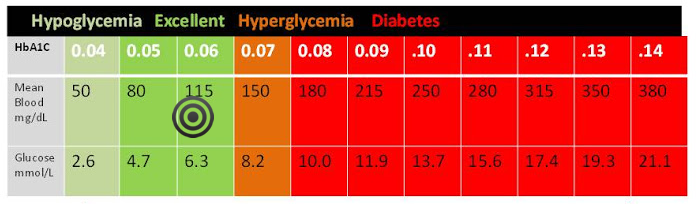

Cholesterol
230 mg/dL
Cholesterol
-
220 mg/dL(September 25th, 2013)38 mg/dL(September 25th, 2013)Your cholesterol is high risk.When too much LDL (bad) cholesterol circulates in the blood, it can slowly build up in the inner walls of the arteries that feed the heart and brain [more]


Blood pressure
130/90
Blood pressure
Blood glucose level
100 mg/dL
Blood glucose level
-
100 mg/dL(September 25th, 2013)Your glucose level is healthy!A blood glucose test measures the amount of a type of sugar, called glucose, in your blood. Glucose comes from carbohydrate... [more]

Vitals last updated September 25th, 2013